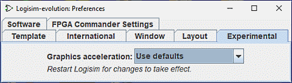

הכרטיסייה ניסויים

העדפות אלו מאפשרות תכונות הנחשבות ניסיוניות, המוכנסות כדי לקבל משוב מהמשתמשים.
- האצת גרפיקה: משתמש Logisim אחד הבחין כי הוספת -Dsun.java2d.d3d=True ל- נראה היה ששורת הפקודה משפרת את הביצועים הגרפיים של Logisim בכך שהורתה לה להשתמש בגרפיקת חומרה תְאוּצָה. תיבה נפתחת זו מנסה להגדיר את Logisim להגדיר זאת; מדווחים אם זה לתיבה הנפתחת יש השפעה כלשהי על הביצועים תתקבל בברכה. זה לא ישפיע עד ללוגיסים הופעל מחדש.
הבא: אפשרויות שורת הפקודה.